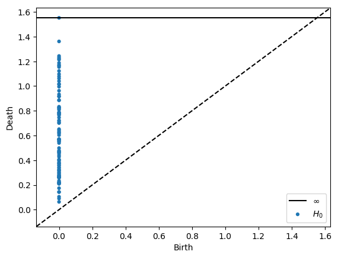
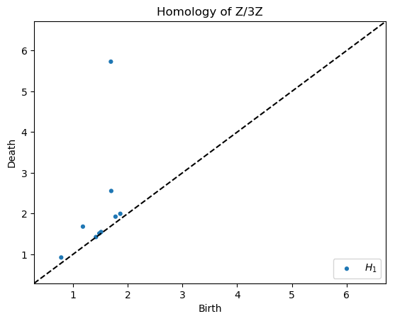
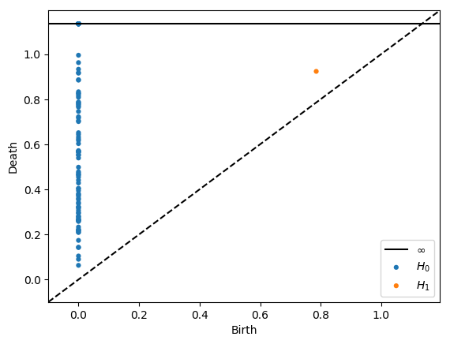
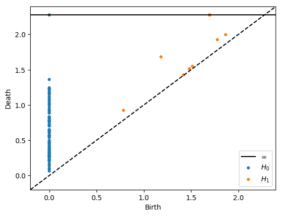
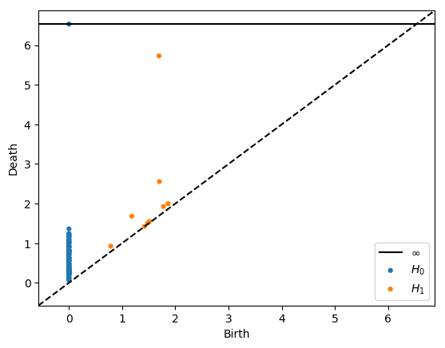

Ripser demonstration¶
This notebook shows the most basic use of the Ripser Python API.
In [1]:
%load_ext autoreload
%autoreload 2
In [2]:
from ripser import ripser, plot_dgms
import numpy as np
from sklearn import datasets
In [3]:
data = datasets.make_circles(n_samples=100)[0] + 5 * datasets.make_circles(n_samples=100)[0]
Default args make it very easy.¶
- Generate diagrams for \(H_0\) and \(H_1\)
- Plot both diagrams
In [4]:
dgms = ripser(data)['dgms']
plot_dgms(dgms, show=True)

In [5]:
# Plot each diagram by itself
plot_dgms(dgms, plot_only=[0], show=True)
plot_dgms(dgms, plot_only=[1], show=True)


Homology over any prime basis¶
We can compute homology over any \(p\ge 2\) by supplying the
argument coeff=p.
In [6]:
# Homology over Z/3Z
dgms = ripser(data, coeff=3)['dgms']
plot_dgms(dgms, plot_only=[1], title="Homology of Z/3Z", show=True) # Only plot H_1

In [7]:
# Homology over Z/7Z
dgms = ripser(data, coeff=3)['dgms']
plot_dgms(dgms, plot_only=[1], title="Homology of Z/7Z", show=True) # Only plot H_1

Specify which homology classes to compute¶
We can compute any order of homology, \(H_0, H_1, H_2, \ldots\). By
default, we only compute \(H_0\) and \(H_1\). You can specify a
larger by supplying the argument maxdim=p. It practice, anything
above \(H_1\) is very slow.
In [8]:
dgms = ripser(data, maxdim=2)['dgms']
plot_dgms(dgms, show=True)

Specify maximum radius for Rips filtration¶
We can restrict the maximum radius of the VR complex by supplying the
argument thresh=r. Certain classes will not be born if their birth
time is under the threshold, and other classes will have infinite death
times if their ordinary death time is above the threshold
In [9]:
dgms = ripser(data, thresh=0.2)['dgms']
plot_dgms(dgms, show=True)

In [10]:
dgms = ripser(data, thresh=1)['dgms']
plot_dgms(dgms, show=True)

In [11]:
dgms = ripser(data, thresh=2)['dgms']
plot_dgms(dgms, show=True)

In [12]:
dgms = ripser(data, thresh=999)['dgms']
plot_dgms(dgms, show=True)
